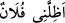
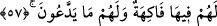

Eğer: “Cennet ehli nasıl gölgelerde olur? Gölge ancak güneşin olduğu yerde bulunur.
Halbuki onlar “Orada ne güneş görürler, ne de dondurucu soğuk.” (el-İnsan, 76/13)”
denirse buna şöyle cevap verilir: Burada gölge ile cennet ehlinin gözlerinin
kamaşmaması için arşın nurundan dolayı cennet ağaçlarının gölgeleri kasdedilmiştir.
Çünkü arşın nuru güneşin nurundan daha büyüktür. Bu aydınlığın arşın kandillerinin
nurundan olduğu da söylenmiştir. Şeyhzâde Hâşiye’sinde böyle geçmektedir.
el-Müfredât’ta der ki: “Şeref, güç ve müreffeh hayat da “gölge” ile ifâde edilir. Allah
Teâlâ şöyle buyuruyor: “Şüphesiz (o gün) takvâ sahipleri, gölgeliklerde ve pınar
başlarında olacaklardır.” (el-Mürselât, 77/41) yâni izzet içinde olacak ve müreffeh
bir hayat süreceklerdir. “__WORD__ (Falanca kişi beni gölgeledi)” demek beni korudu,
izzetine ve himayesine aldı demektir. Allah Teâlâ’nın: “Onları koyu bir gölgeye
koyarız.” (en-Nisa, 4/57) sözü müreffeh bir hayattan kinâyedir.”
İmam (Râzî) Nisa suresinde der ki: “Arap ülkeleri çok sıcaktır. Bundan dolayı da
gölge onlar için rahatlığın en büyük sebeplerindendir. Bu gölge mânâsını rahatlıktan
kinâye olarak ifâde ederler. Hz. Peygamber (s.a.): “Sultan yeryüzünde Allahın
gölgesidir.”[159] buyurmuştur.
Âyette işâret vardır ki Allah Teâlâ her iki cihâna iltifâtı bırakan, müşâhedeleri
murâkabe eden topluluklara şöyle buyuruyor: “Bugün cennetlikler, gerçekten nimetler
içinde safâ sürerler. Onlar ve eşleri gölgeler altında tahtlara kurulurlar.” O halde siz
bana rağbet edin, benimle meşgul olun. Benim vuslat nimetlerimle safâlar bulun. Benim
cemâlimi müşâhede ile lezzetlenin. Çünkü onun üstünde başka bir lezzet yoktur. Allah
bizi ve sizi bu nimetle rızıklandırsın.
Hâfız der ki:
Hurilerin sohbetini istemem ki bu, kusurun ta kendisidir,
Senin hayalini kurmak varken başka bir şeyle meşgul olmam
Yine o şöyle demiştir:
İki cihanın zevk ve lezzeti,
Âşıklar katında bir arpa değerindedir.
57. Orada onlar için her çeşit meyve vardır. Bütün arzuları yerine getirilir.
“Orada onlar için her çeşit meyve vardır.” Bu âyet cennet ehlinin ünsiyet ve dostluk
meclislerini ve kudsiyet mahfillerini beyân ettikten sonra içinde bulundukları safânın ve
güzelliğin nasıl olduğunu tam olarak ortaya koymak için yiyeceklerini, içeceklerini,